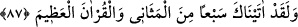
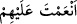

onlarla mücâhede eden riyâzat ehli kimselerdendir. Çünkü taleb, sıdk/samîmilik ve
mücâhede, kalbin aşkının sonuçlarındandır. Nefis ile riyâzatta çok uğraşmaktan bu aşk
nefse de sirâyet eder. Nefis, aşk kıyâmetinde sıfatlarından geçip ölür. Bir kimse ölünce
kıyâmeti de kopmuş demektir.
“Şimdilik onlara güzel muâmele et.” Şimdi sen ey sâdık tâlib, riyâzât hâlindeki nefsi
okutup terbiye ederek ona hoşgörülü davran, fazla yük yükleme. Gücünün yetmeyeceği
şeyleri taşıtmaya çalışma. Çünkü, mücâhede ile senelerce elde edilemeyecek kazançlar
aşkın gelip çatarak bir anda meydana getirivereceği arınma ile elde ediliverir. Zira aşk,
Hakk’ın cezbesidir. Hz. Peygamber (s.a.) buyurur ki: “Hakk’ın cezbelerinden bir
cezbe, insan ve cinlerin ameline denktir.”[89]
“Şüphesiz Rabbin hakkıyla yaratan, pek iyi bilendir.” Mübâlağa veznindeki ‘el-
hallâk’ sıfatı ile Allah’ın mahlûkâtın sûret, mânâ ve hakîkatlerini yarattığına işâret
ediliyor. O, yarattığı varlıkları, zât ve sıfatlarının mazharı olmaya istîdâdlı olarak bilir.
Yarattıklarının O’nun zât ve sıfatlarına mazhar olması, onların şuûrunda olmasıdır. et-
Te’vîlâtü’n-Necmiyye’de böyle geçmektedir.
87. Andolsun ki, biz sana tekrarlanan yedi âyeti ve yüce Kur’an’ı verdik.
Hüseyn b. Fadl diyor ki: Mekke’ye aynı gün içerisinde Kurayza ve Nadîr
yahûdîlerine âid ticâret malları ile Busra’dan yedi kervan gelmişti. Getirdikleri şeyler
arasında çeşit çeşit dokuma ürünleri, güzel kokular, baharatlar, mücevherler, denizden
çıkarılan (inci vb.) maddeler de vardı. Bunu gören bazı müslümanlar, bunlar bize âid
olsaydı hem bunlarla güç kazanır, hem de onları Allah yolunda infâk imkânı bulurduk.’
dediler. Bunun üzerine Allah bu âyeti inzâl ederek bir nevî şöyle buyurmuş oldu: ‘Ben
size bu yedi kervandan daha hayırlı yedi âyet vermiş bulunuyorum.’
Bu rivâyetin doğru olduğuna bundan sonraki âyette “gözlerini.... dikme” buyrulması
da delâlet eder. Nitekim İmam Vâhidî’nin Esbâbü’n-nüzûl’ünde böyle geçmektedir.
et-Teysîr’de rivâyet edilir ki Kureyşin yedi kervanı bir günde pek çok yiyecek ve
elbise ile Mekke’ye geldi. Hz. Peygamber (s.a.)’in mübârek hatırından ‘Mü’minler
günlerini aç ve çıplak geçirir. Bu malın hepsi de müşriklerin olur.’ diye bir düşünce
geçti. İşte bunun üzerine Allah Teâlâ şöyle buyurdu:
Ey Muhammed! “Andolsun ki, biz sana tekrarlanan yedi âyeti…” yâni Fâtiha
sûresini verdik. Çünkü Fâtiha sûresi, yüz yirmi üç harf, yirmi beş kelime ve yedi âyettir.
Bu hususta ittifâk vardır. Ancak yedinci âyet olarak kimi âlimler besmeleyi değil “__WORD__ en‘amte aleyhim”i, kimisi de bunun tersini saymıştır.
“Mesânî (tekrarlanan)” Kur’ân’dır. Çünkü Zümer sûresi’nde: “Allah sözün en
güzelini, birbiriyle uyumlu ve bıkılmadan tekrar tekrar okunan bir kitap olarak